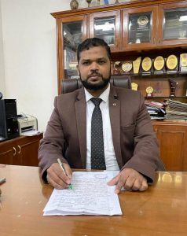

Principal's Desk
Dr.Jinna Sheik Mohammed
(M.E.,Ph.D.)
Dear all,
“Progress is impossible without change and those who cannot change their minds cannot change anything “ - George Bernard Shaw
Change is inevitable for progression and with change comes new ideas and action. With new hope our new team looks ahead for great tasks with great expectations.
Nellai College of engineering, an ISO certified minority institution works with the vision to prepare socially responsible technical personnel of excellence, through academic and advanced research.
Started in 2000 as National College of engineering, the college comes now with a new name of Nellai College of engineering. At present, the college is offering 5 Under Graduate courses namely Civil Engineering, Computer Science & Engineering, Electrical Engineering, Electronics & Communication Engineering and Mechanical Engineering.
The college has the best state of the art infrastructure facilities with well developed laboratories, updated libraries, comfortable classes and student amenities.
The college also provides space for students to hone their talents in extracurricular and co-curricular activities. The college developed research fervour through workshops, training’s, conferences and seminars.
The college has a long line of accomplishments and the placement cell contributes it’s best to shape the student’s employability skills.
Each department has a fresh flow of blood in well qualified faculty. Setting its own milestones, the college provides opportunities for both the students and staff alike to grow together.
Join NCE to adopt your attitude, develop your aptitude and reach your altitude!
I wish a warm welcome to the new students of the college and hope that their years in this college will be fruitful and knowledgeable.
ALL THE VERY BEST
With Best Wishes,
Leave a comment